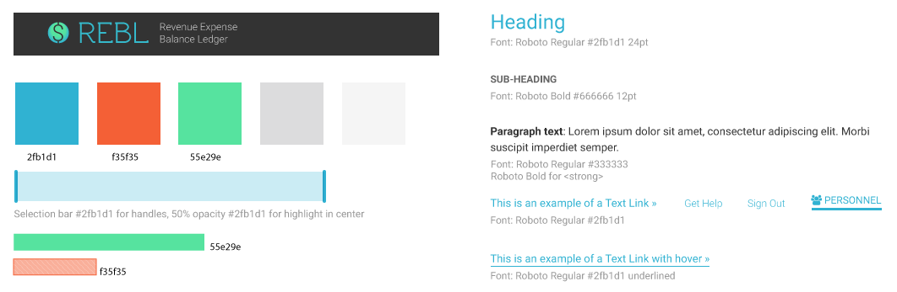
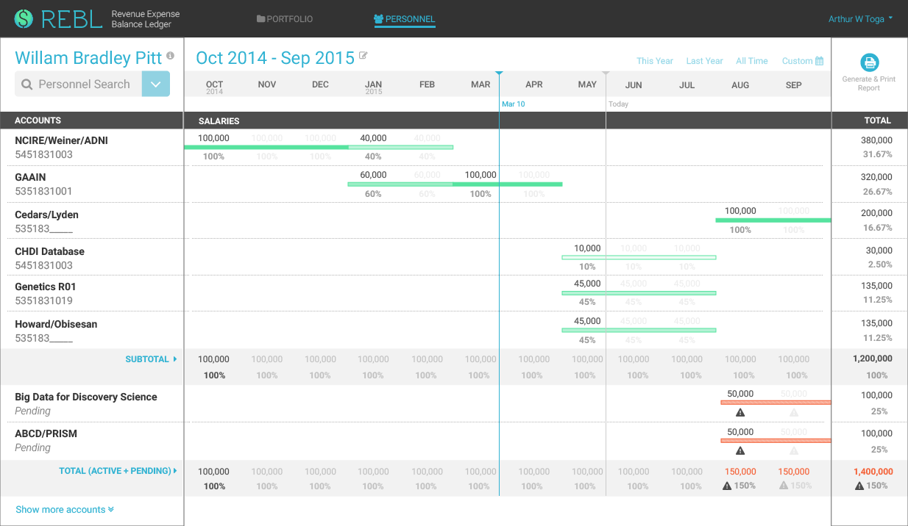
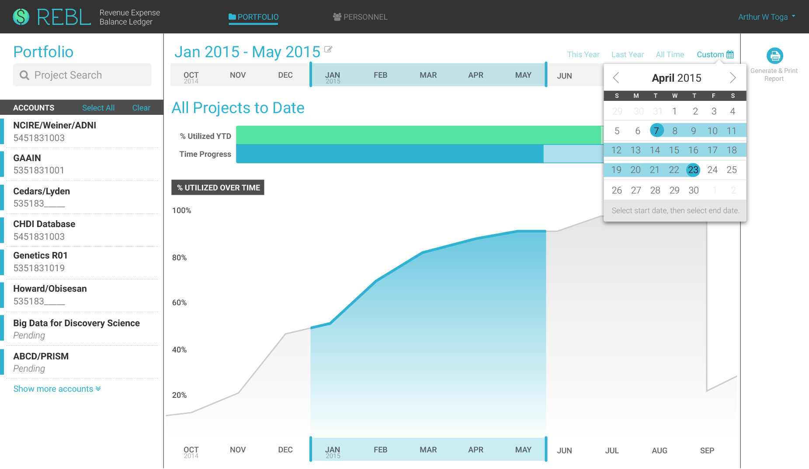
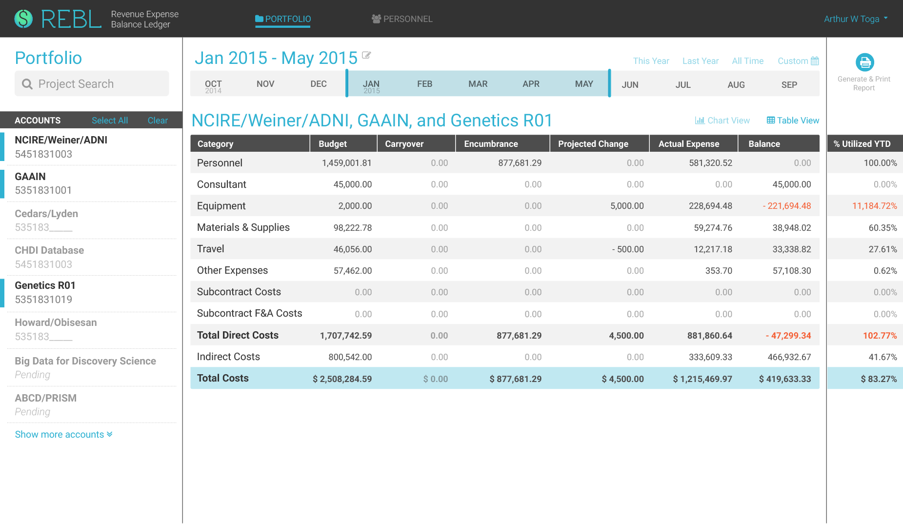

Summary
D&D is a mobile application with some gamification elements, designed to help diabetic patients with comorbid depression manage their conditions better. The project was a winner of the Validic/iHealth track at Health 2.0 SF Code-a-thon 2014.
I was the design lead for the team. My responsibilities included user research and personas, wireframing, UX design, and final UI mockups. Another designer worked on choosing a color palette and some iconography. Other team members worked on market research, API implementation, back-end programming, and product pitching. (This was my first hackathon and I documented the learning experience in a Medium blog post.)
The problem
Depression frequently occurs with diabetes, yet it usually remains unrecognized and untreated in patients with both these conditions. It is important to detect early signs of comorbid depression, so that caregivers and care providers can provide treatments early. Patients also need to stay motivated and compliant.
General concept
Our app rewards XP points for each health data point recorded, whether manually by the user via task (or quest) completion, or by automatic input from wearables. Besides data tracking, D&D also motivates the user to improve his mood as needed through certain social tasks.
D&D can pull in medication and doctor’s appointment data (via Allscript API), vitals such as blood glucose or weight (via Validic API and iHealth devices), or, when the threshold for depression is triggered, offer to look for a doctor with appropriate rankings (via BetterDoctor API).
Wireframes
Not only did different essential components have to be present, they also had to be in a clean and functional layout. I started by blocking out labeled areas to represent each important component. This low-fidelity wireframe allowed me to move things around rapidly for pure layout purpose.
I then added pertinent content to reach a more detailed wireframe for discussion with stakeholders.
Portfolio Dashboard View

Preliminary meetings led to additional iterations for different usage patterns, such as choosing time or viewing personnel data. When I created the personnel wireframe,
I realized I could (and should) utilize the same layout I used for the portfolio view, specifically for the timeline and account list. This made for a smoother experience switching between different views (portfolio vs. personnel).
Personnel Dashboard View

Style tile
Aiming for a simple and clean UI, I decided to limit the color palette to just 1 primary accent color, and 2 secondary colors to denote positive and negative information. Texture was applied as necessary to provide accessibility for color-blindness. All other content would be in different levels of gray.
Color mockups and iterations
During this stage, several iterative changes occurred as I met with users. New content was provided (and required), so the design changed adaptively. For example, the personnel dashboard evolved to be more complex over time, as users essentially asked for it to look like "an Excel table". To keep this simple, I faded out repeated elements ($ sign, same number each row, 0 values).

Version 4 above got closer to what we needed. However, it looked busy. A closer analysis showed that there were 7 distinct blocks (in red, bottom), and there was not enough contrast overall. This led to version 5, where the vertical blocks were reduced to just 3, and contrast was subtly increased:
Personnel Dashboard View

Portfolio: Chart View + Custom Date

Portfolio: Table View + Selected Accounts

Interactive prototype
I created an interactive prototype with InvisionApp to test for usability, and to present at a faculty meeting. The demo received many positive stakeholders feedback that would help solidify the design and facilitate back-end development.